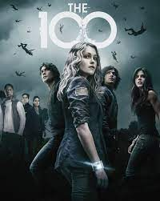

Sky_crew?
Sky_Crew est un concept propre à moi que j'ai adopté après avoir visionner 4 des saisons d'une série "Les 100" qui prone
le vivre ensemble, l'entraide, le sacrifice et l'amour. Me sentant concerné par tout celà et tout en voulant acquérir et conserver
ses qualités là, j'ai décidé d'adopter le "pseudonyme" de skycrew qui represente une équipe spécifique dans cette série là. Cependant celà fait plus de
4 ans que je l'ai regardé mais le nom je l'aime beaucoup c'est pourquoi je ne veux pas le changer.
Je vous laisse ici un lien vers la série au cas où vous souhaitez y jeter un coup d'oeil 

Qui suis-je?
Je me nomme KENMOU Paule Emilie, je suis de nationalité camerounaise, j'ai 23 ans je suis l'ainée d'une famille de trois enfants et la fille unique à ma maman. Toute petite j'étais très ouverte, joviale et conviviale etc j'ai malheureusement perdu quelques unes de ses qualités dus à certaines circonstances que j'ai vécu.
J'ai toujours fais des mathématiques et sciences physiques à l'école bienque mon rêve était (est) de devenir médécin, précisemment pédiatre! Après l'optention de mon baccalauréat j'ai étudier une année l'informatique dans un cycle de BTS(Brevet de Technicien Supperieur), cycle que je n'ai pas terminé et j'ai poursuivis mes études dans
un pays totalement étranger pour moi: la Tunisie.J'avais plutôt hâte de partir pour ce pays qui m'étais encore inconnu car n'en pouvant plus de la situation que je vivais. Une fois en Tunisie j'ai poursuivis mes études, j'ai obtenu le diplôme de classe préparatoire au cycle d'ingénieur filière mathématiques physiques et je suis
actuellement en 1ère année informatique cycle ingénieur.